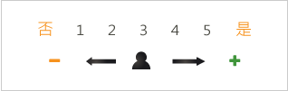

注意事項
這份評量是要協助您找出『真正的自己』-也就是沒有武裝、沒有壓力、最舒服、最自然的自己，心理學家稱之為『本我』。找出『本我』，才能做出最恰當的生涯規劃；活得最快樂；表現最高的工作產能；擁有更自信與圓熟的人際關係，並開創最理想的人生舞台。
在正式評量之前，請先清楚填寫下列資料
01
請依序作答，勿跳題、漏題。
02
題目中共有３０個形容詞句－均為中性，無好、壞之分請勿考慮別人的看法，請以自己直覺迅速作答。
03
作答時請將姓名逐一帶入形容詞的前方，並點選出您的強度、弱度。
04
強弱度量表

我們以下面一個題目做範例：
（１７）外向的 12345
★若您認為您是：
"非常外向"請點選“５”
"是外向的"則點選“４”
"有時候外向，有時候不外向"則點選“３”
"不是很外向"則點選“２”
"非常不外向"點選“１”
05
請以下面的題目做一練習：
（１７）外向的 12345
自我練習 → 我是 " 外向的 " 人嗎？
06
如果您在施測時發生網路中斷等情事，請再重新執行。
如在上班時間，亦可以電話或Email與我們客服人員聯絡，
電話：(04) 22559158
Email：service@aak.com.tw
閱讀完了嗎
如果沒有其他問題，則請您按下開始測驗的按鈕。
在進行問卷前，系統將引導您進入「本我」請隨著系統的引導，拋開工作與家庭的角色體察「沒有武裝」、「沒有壓力」、「最舒服」、「最自然」的自己－完全的自己然後填寫問卷。
請注意：若您在進行情境引導時，等侯時間過久，可以略過引導動畫，直接進行評量！